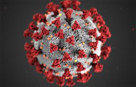

Disease caused by Microorganisms

Microorganisms can also result in the spoilage of food. The souring of milk, putrefaction of meat, rotting of
potatoes, vegetables and fruits are due to the action of bacteria. Growth of mould can make food unfit
for consumption. Yeast can also make fruit juices, tomato juices etc. unfit for consumption.
Microorganisms growing on food can sometimes produce toxic substaces. This makes the food posionous. Consuming
such food can cause a serious illness called food poisoning . The most common symptoms of food poisoning include nausea, vomiting, and diarrhea. Although it's quite uncomfortable, food poisoning isn't unusual.
Thank You for viewing this web application. Application made by: Abeer Chawla